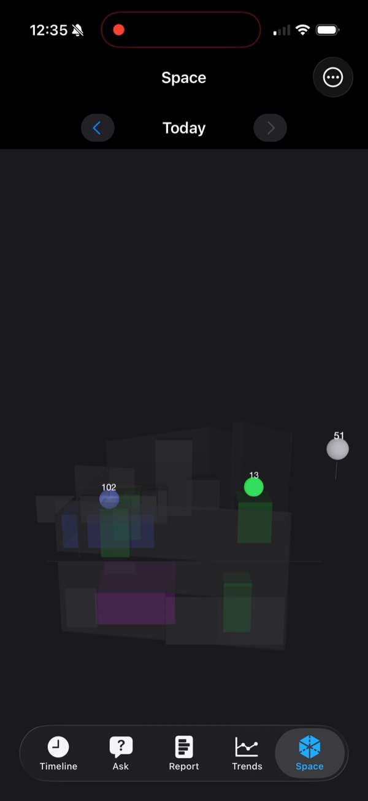
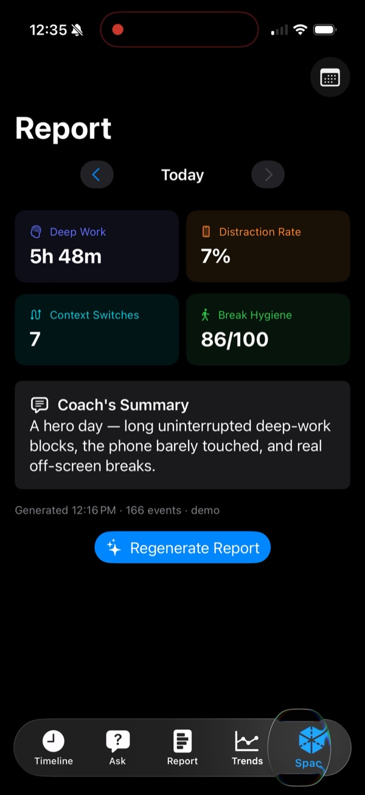
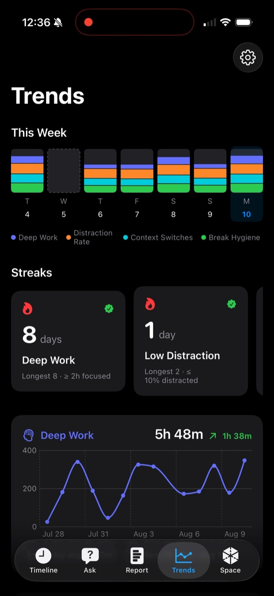

All Projects
TimeLens
An iOS app that turns POV frames from Meta Ray-Ban Gen 2 glasses into a searchable timeline of your day.

An iOS app that turns POV frames from Meta Ray-Ban Gen 2 glasses into a searchable timeline of your day.
01 — Capture
Meta Ray-Ban Gen 2 glasses capture POV frames, which are downscaled and sent to Gemini, converted into structured JSON events, and written to a SwiftData timeline — then the image is deleted immediately. The core privacy invariant is frame-to-text-then-delete: no image is ever persisted.
A coaching layer generates per-day reports scoring deep work, distraction rate, context switches, and break hygiene.
02 — Spatial

A RoomPlan LiDAR scan of the room, with the day's events pinned to real furniture and rendered in SceneKit. Tapping a marker jumps to that moment in the Timeline.
03 — Ask
On-device NLEmbedding retrieval answers natural-language questions about the day, with tappable timestamp chips that jump straight to the source event.
04 — Reports


Each day gets a generated report scoring deep work, distraction rate, context switches, and break hygiene, with a short written summary. Trends tracks the same metrics across 14 days with sparklines, deltas, and streaks.
05 — Cost
The app runs at $0/month on the Gemini free tier via multi-pool quota routing: pinned model IDs, per-pool budgets, RPM pacing, and 429 handling.
Beyond the coaching reports, TimeLens ships a day-centric Timeline with day sections, Trends with 14-day sparklines, deltas, and streaks, and home-screen widgets.
The stack is SwiftUI, SwiftData, async/await, and iOS 17+, with the Meta Wearables DAT SDK 0.8.0 — no third-party dependencies beyond that one SDK.
06 — Limits
On-device inference does not ship. Settings includes a Vision Engine picker with an “On-Device” option labeled “Preview — requires iOS 27. Frames continue to use Cloud (Gemini).” The seam is built and tested, but no inference runtime ships — every frame is processed in the cloud by Gemini.
Demo dataset. Footage on this page uses the seeded 14-day demo dataset, not real logged days.